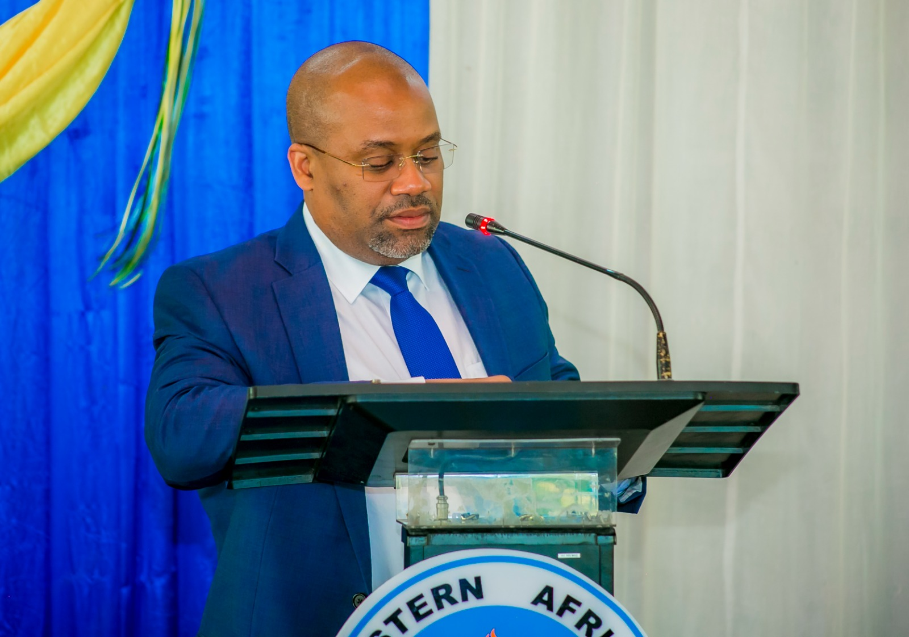

Mrs.Nyambilila Minga

President of the convocation
She appreciated the given chance to show or to offer remarks of the Rector at this 6thEastc convocation. but also she appreciated the presence of the guests of honor
she also explained the significant development that occured at our center. She also explained and described the awards which will be presented on that day
- The Rectors prizes
- NBS Prizes
- OCGS Prizes
- Data Vission Prizes
- Appreciation to students who attained distinction
- Academic staff prizes
- Certificates of merits to EASTC -SO leaders
Dr.Tumaini Katunze

RECTOR
He was responsible for the introduction of guests and welcoming remarks, and also responsible for annual general meeting, vote of thhanks and closingHe also introduced the theme of the year that state as
modernization data ecosystem to accelerate the immplementations of african continental free trade (AFCFTA)and also he state on The role of official statistics and big data in the economic transformation
and sustainable development in Africa
He also introduced the eastern african statistical training comunities that involved in studying, developing, researching as well as the application of ICT solutionshe appreciated the benefactors who provided
support on the preparation of the convocation especially in award giving processes. since they begun and continue their proffesional relationship that gives mutual development
He congratulated the graduates and wished them success in their next life and he ended his remarks by warmly welcoing them all to the 6thconvocation of EASTCof the year 2023.
WINNIE KEMUNTO OTEYO
MASTER OF OFFICIAL STATISTICS with G.P.A of 4.97345
ALI MUHAMED ALI
BACHELOROF OFFICIAL STATISTICS with G.P.A of 4.5
YUSSUF MAULID SEIF
ORSINARY DIPLOMA IN STATISTICS with G.P.A of 4.4
NELSON WILSON ANDREW
BASIC TECHNICIAN CERTIFICATE IN STATISTICS with G.P.A of 3.4